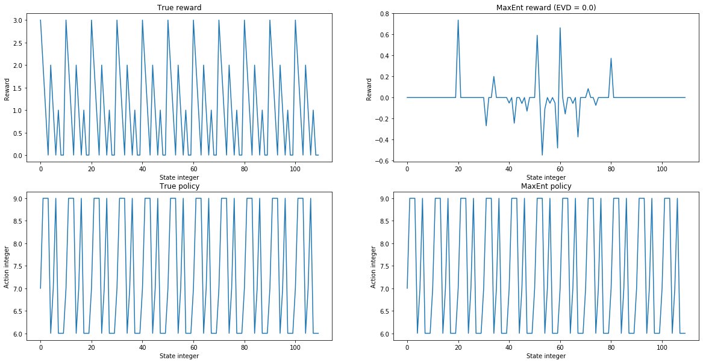
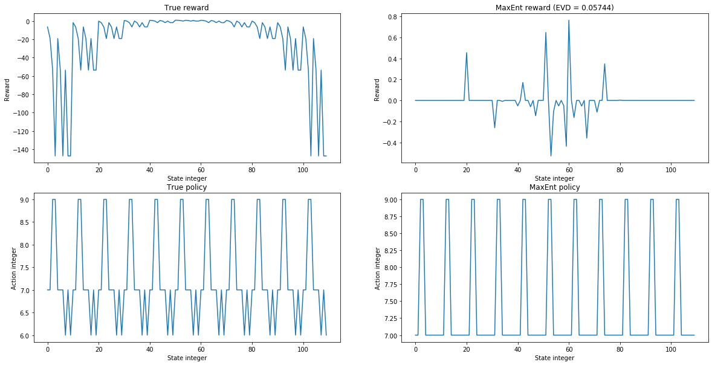

Reinforcement Learning
This page shows an implementation of inverse reinforcement learning. Typically, an inverse reinforcement learning implementation also requires the solution to the forward reinforcement learning algorithm.
This notebook implements the results of Towards Inverse Reinforcement Learning for Limit Order Book Dynamics. I create a maximum entropy inverse reinforcement learning algorithm, and a single level limit order book simulation. The IRL algorithm is run on the LOB to infer the reward function of one of the traders. This is first done with a linear reward and then a non-linear exponential reward.
Moving forward, I would like to rewrite the inverse reinforcement learning algorithm to work on continuous spaces.
import matplotlib.pyplot as plt import numpy as np import numpy.random as rn import math from itertools import product, combinations from tqdm import tnrange, tqdm_notebook import seaborn as sns
Inverse reinforcement learning point estimates using the principle of Maximum Entropy
I write a class based on Ziebart's work on the principle of maximum entropy in the context of inverse reinforcement learning. This allows the reward function of any MDP to be inferred from a given state of trajectories. I have modified the standard method to instead directly infer the reward using Bayesian analysis.
class MaxEnt: def __init__( self, feature_matrix, num_actions, transitions, trajectories=None, gamma=0.9, eta=0.01, epochs=100, margin=1e-2, horizon=None, ): """ Maximum entropy inverse reinforcement learning class. Parameters ---------- feature_matrix: np.ndarray (N, D)-shaped array where N is the number of states and D is the dimensionality of the state. num_actions: int Number of actions. transitions: np.ndarray (N, A, N)-shaped array mapping (state_i, action, state_k) to the probability of transitioning from state_i to state_k under action. trajectories: np.ndarray, default: None (T, L, 2)-shaped array where T is the number of trajectories and L is the trajectory length. Contains state/action pairs. States are ints, actions are ints. gamma: float, default: 0.9 Discount factor of the MDP. eta: float, default: 0.01 Gradient descent learning rate. epochs: int, default: 100 Number of gradient descent steps. margin: float, default: 1d-2 threshold for forward reinforcement learning. horizon: int, default: None Cut off time of the horizon for discounting the reward. None if infinite horizon. int if finite horizon. Attributes ---------- feature_matrix: np.ndarray Feature matrix. num_actions: int Number of actions. transitions: np.ndarray Transition matrix. trajectories: np.ndarray Trajectories list. gamma: float Discount factor of the MDP. eta: float Gradient descent learning rate. epochs: int Number of gradient descent steps. margin: float threshold for forward reinforcement learning. horizon: int Cut off time of the horizon for discounting the reward. None if infinite horizon. int if finite horizon. """ self.feature_matrix = feature_matrix self.num_actions = num_actions self.transitions = transitions self.trajectories = trajectories assert np.isclose(self.transitions.sum(axis=2), 1).all() self.num_states, self.dim_states = self.feature_matrix.shape self.epochs = epochs # number of epochs for gradient descent self.eta = eta # learning rate for gradient descent self.gamma = gamma # discount factor for reinforcement learning value function self.margin = margin # margin for reinforcement learning self.horizon = horizon # forward reinforcement learning functions def value(self, policy, reward): ''' Computes the value of the MDP under a given policy and reward. Parameters ---------- policy: np.ndarray Policy of the MDP. reward: np.ndarray Reward of the MDP. Returns ---------- np.ndarray Value of the MDP. ''' v = np.zeros(self.num_states) if self.horizon: for timestep in range(self.horizon): for s in range(self.num_states): vs = v[s] a = policy[s] v[s] = sum(self.transitions[s, a, k] * (reward[k] + self.gamma * v[k]) for k in range(self.num_states)) return v diff = float("inf") while diff > self.margin: diff = 0 for s in range(self.num_states): vs = v[s] a = policy[s] v[s] = sum(self.transitions[s, a, k] * (reward[k] + self.gamma * v[k]) for k in range(self.num_states)) diff = max(diff, abs(vs - v[s])) return v def optimal_value(self, reward): ''' Computes the optimal value of an MDP under a given reward. Parameters ---------- reward: np.ndarray Reward of the MDP. Returns ---------- np.ndarray Optimal value of the MDP. ''' v = np.zeros(self.num_states) if self.horizon: for timestep in range(self.horizon): for s in range(self.num_states): max_v = float("-inf") for a in range(self.num_actions): tp = self.transitions[s, a, :] max_v = max(max_v, np.dot(tp, reward + self.gamma*v)) v[s] = max_v return v diff = float("inf") while diff > self.margin: diff = 0 for s in range(self.num_states): max_v = float("-inf") for a in range(self.num_actions): tp = self.transitions[s, a, :] max_v = max(max_v, np.dot(tp, reward + self.gamma*v)) new_diff = abs(v[s] - max_v) if new_diff > diff: diff = new_diff v[s] = max_v return v def find_policy(self, reward, v=None, stochastic=True): ''' Computes the the policy of the MDP under a given reward and value. Parameters ---------- reward: np.ndarray Reward of the MDP. v: np.ndarray, default: None Value of the MDP. stochastic: bool, default: True Whether to compute a stochastic policy or not. Returns ---------- np.ndarray Value of the MDP. ''' if v is None: v = self.optimal_value(reward) if stochastic: # Get Q using equation 9.2 from Ziebart's thesis. Q = np.zeros((self.num_states, self.num_actions)) for i in range(self.num_states): for j in range(self.num_actions): p = self.transitions[i, j, :] Q[i, j] = p.dot(reward + self.gamma*v) Q -= Q.max(axis=1).reshape((self.num_states, 1)) # For numerical stability. Q = np.exp(Q)/np.exp(Q).sum(axis=1).reshape((self.num_states, 1)) return Q def _policy(s): return max(range(self.num_actions), key=lambda a: sum(self.transitions[s, a, k] * (reward[k] + self.gamma * v[k]) for k in range(self.num_states))) policy = np.array([_policy(s) for s in range(self.num_states)]) return policy # inverse reinforcement learning functions def irl(self): ''' Compute the reward of the MDP with respect to provided trajectories. Parameters ---------- Returns ---------- np.ndarray Reward of the MDP. ''' r = np.zeros(shape=(self.num_states,)) mu = self.find_svf() for i in tnrange(self.epochs): expected_mu = self.find_expected_svf(r) grad = mu - expected_mu r += self.eta * grad return r.reshape((self.num_states,)) def find_svf(self): ''' Compute state visitation frequencies of the given MDP with respect to provided trajectories. Parameters ---------- Returns ---------- np.ndarray State visitation frequencies of the MDP. ''' svf = np.zeros(self.num_states) for trajectory in self.trajectories: for state, _, _ in trajectory: svf[int(state)] += 1 svf /= self.trajectories.shape[0] return svf def find_expected_svf(self, r): ''' Compute expected state visitation frequencies of the given MDP under a given reward with respect to provided trajectories. Parameters ---------- r: np.ndarray Reward of the MDP. Returns ---------- np.ndarray Expected state visitation frequencies of the MDP. ''' n_trajectories = len(self.trajectories) trajectory_length = max([len(trajectory) for trajectory in self.trajectories]) start_state_count = np.zeros(self.num_states) for trajectory in self.trajectories: start_state_count[int(trajectory[0, 0])] += 1 p_start_state = start_state_count/n_trajectories expected_svf = np.tile(p_start_state, (trajectory_length, 1)).T # To do: find transitions without using model. policy = self.find_policy(r) for t in range(1, trajectory_length): expected_svf[:, t] = 0 for i, j, k in product(range(self.num_states), range(self.num_actions), range(self.num_states)): expected_svf[k, t] += (expected_svf[i, t-1] * policy[i, j] * # Stochastic policy self.transitions[i, j, k]) return expected_svf.sum(axis=1) def expected_value_difference(self, optimal_policy, irl_policy, true_reward): ''' Compute expected value difference of the computed policy. Parameters ---------- optimal_policy: np.ndarray Optimal policy of the MDP. irl_policy: np.ndarray Policy of the MDP computed through inverse reinforcement learning. true_reward: np.ndarray True reward of the MDP. Returns ---------- float Expected value difference of the MDP. ''' n_trajectories = len(self.trajectories) start_state_count = np.zeros(self.num_states) for trajectory in self.trajectories: start_state_count[int(trajectory[0, 0])] += 1 p_start_state = start_state_count / n_trajectories return self.value(optimal_policy, true_reward).dot(p_start_state) - self.value(irl_policy, true_reward).dot(p_start_state)
Dynamics of a simplified single level limit order book
The prototype MDP on which the inverse reinforcement learner is tested is given by the reference paper. It is a single level limit order book with three uninformed traders and an expert agent.
class LOB: ''' Limit order book simulation class taken from the above referenced paper. Parameters ---------- N: int, default: 3 number of traders tau: list of float, default: [.1, .5, 1] parameters of each trader I_max: int, default: 5 maximum inventory size T: int, default: 5 number of timesteps best_bid: float, default: 99.9 best_bid price best_ask: float, default: 100 best_ask price linear_reward: bool, default: True True for linear reward, False for exponential reward. Attributes ---------- N: int number of traders tau: list of float parameters of each trader I_max: int maximum inventory size T: int number of timesteps best_bid: float best_bid price best_ask: float best_ask price feature_matrix: np.ndarray matrix of features num_states: int number of states dim_states: int dimensions of each state num_actions: int number of actions transitions: np.ndarray transition matrix true_reward: np.ndarray true reward of the environment ''' def __init__( self, N = 3, tau = [.1, .5, 1], I_max = 5, T = 5, best_bid = 99.9, best_ask = 100, linear_reward=True, ): self.N = N self.tau = tau self.I_max = I_max self.T = T self.best_bid = best_bid self.best_ask = best_ask self.feature_matrix = np.array([np.array(self.int_to_state(j)) for j in range(self.state_to_int(self.N, 0, self.I_max) + 1)]) self.num_states, self.dim_states = self.feature_matrix.shape self.num_actions = self.action_to_int(self.N, 0) + 1 self.transitions = np.array([ np.array([ np.array([ self.probability( self.int_to_state(i), self.int_to_action(j), self.int_to_state(k), ) for k in range(self.state_to_int(self.N, 0, self.I_max) + 1) ]) for j in range(self.action_to_int(self.N, 0) + 1) ]) for i in range(self.state_to_int(self.N, 0, self.I_max) + 1) ]) if linear_reward: self.reward = self.reward_linear else: self.reward = self.reward_exponential self.true_reward = np.array([self.reward(b,a,i) for (b,a,i) in self.feature_matrix]) # state enumeration def state_to_int(self, v_b, v_a, i_EA): ''' Enumerates a state. Parameters ---------- v_b: int Size of bid side of the order book v_a: int Size of ask side of the order book i_EA: int Inventory size of the expert agent Returns ---------- int Enumerated state ''' states_i = .5 * (self.N + 1) * (self.N + 2) * (i_EA + self.I_max) states_vb = (self.N + 1) * v_b - .5 * v_b * (v_b - 1) states_va = v_a return int(states_i + states_vb + states_va) def int_to_state(self, num): ''' Maps an integer to a state. Parameters ---------- num: int Integer enumerating the state Returns ---------- list State parameters ''' states_per_i = .5 * (self.N + 1) * (self.N + 2) i_states = int(num // states_per_i) - self.I_max left_over = num % states_per_i vb_states = int((np.cumsum([i+1 for i in range(self.N+1)][::-1]) > left_over).nonzero()[0][0]) if vb_states == 0: va_states = int(left_over) else: va_states = int(left_over - np.cumsum([i+1 for i in range(self.N+1)][::-1])[ np.cumsum([i+1 for i in range(self.N+1)][::-1]) > vb_states ][vb_states - 1]) return [vb_states, va_states, i_states] # action enumeration def action_to_int(self, vb, va): ''' Enumerates an action. Parameters ---------- vb: int Bid-side volume va: int Ask-side volume Returns ---------- int Enumerated action ''' return int(.5 * (vb + va) * (vb + va + 1) + vb) def int_to_action(self, num): ''' Maps an integer to an action Parameters ---------- num: int Integer enumerating the action Returns ---------- tuple Action parameters ''' numsum = (np.array([.5 * i * (i + 1) for i in range(self.N + 1)]) <= num).nonzero()[0][-1] vb = int(num - [.5 * i * (i + 1) for i in range(self.N + 1)][numsum]) va = int(numsum - vb) return (vb, va) # transition probabilities def bid_probability(self, tau, b, a): ''' Computes Bernoulli probability of a bid, given tau, previous bid, and previous ask. Parameters ---------- tau: int trader parameter b: int previous bid a: int previous ask Returns ---------- float probability of a bid ''' b_, a_ = b / tau, a / tau result = np.exp(b_) / ( np.exp(b_) + np.exp(a_)) return result def poisson_binomial(self, k, n, b=0, a=0): ''' Uses the poisson binomial distribution of having k successful trials out of a total of n, to compute the probability of k bids with n trading agents. Parameters ---------- k: int number of successful trials. n: int total number of trials. b: int, default: 0 number of asks. a: int, default: 0 number of bids. Parameters ---------- float probability of k bids with n trading agents. ''' result = 0 F_k = np.array(list(combinations(list(range(1, n + 1)), k))) for A in F_k: pi_1 = np.array([self.bid_probability(self.tau[e-1], b, a) for e in A]).prod() pi_2 = np.array([ 1 - self.bid_probability(self.tau[e-1], b, a) for e in np.setdiff1d(range(1, n + 1), A) ]).prod() result += pi_1 * pi_2 return result def probability(self, s0, a, s1): ''' Compute probability of transition between states Parameters ---------- s0: int initial state. a: int action. s1: int succeeding state. Returns ---------- float Probability of transition from s0 to s1 through a. ''' belief_states = [i for i in list(product(range(self.N+1),range(self.N+1))) if sum(i) == self.N] for belief_state in belief_states: if (max(belief_state[0] - a[1], 0) == s1[0]) and (max(belief_state[1] - a[0], 0) == s1[1]): bought = a[0] - max(a[0] - belief_state[1], 0) sold = a[1] - max(a[1] - belief_state[0], 0) if s1[-1] == sold - bought: # print(s0, a, s1, belief_state) return self.poisson_binomial(belief_state[0], n=self.N, b = s0[0], a = s0[1]) return 0 # reward def reward_linear(self, b, a, i): ''' Compute the linear reward of a state. Parameters ---------- b: int Number of bids. a: int Number of asks. i: int Inventory. Returns ---------- float Linear reward. ''' return self.N - b - a def reward_exponential(self, b, a, i, alpha=1, beta=1): ''' Compute the exponential reward of a state. Parameters ---------- b: int Number of bids. a: int Number of asks. i: int Inventory. alpha: int Reward parameter. beta: int Reward parameter. Returns ---------- float Exponential reward. ''' return 1 - np.exp(-alpha * (self.reward_linear(b,a,i) - beta * abs(i))) # trajectories def generate_trajectories(self, n_trajectories, policy): """ Generate n_trajectories trajectories with length trajectory_length, following the given policy. Parameters ---------- n_trajectories: int Number of trajectories. trajectory_length: int Length of an episode. policy: np.ndarray Map from state integers to action integers. random_start: bool, default: False Whether to start randomly. Returns ---------- list list of trajectories each featuring (state, action, reward) tuples. """ trajectories = [] for n in range(n_trajectories): state = self.state_to_int(*self.feature_matrix[np.random.choice(np.extract(abs(self.feature_matrix[:,-1]) != 5, range(len(self.feature_matrix))))]) action = policy[state] trajectory = [ np.array([state, action, self.reward(*self.int_to_state(state))]) ] # go until path ends by stopping conditions for t in range(self.T - 1): next_state_p = self.transitions[state, action] p = (next_state_p / sum(next_state_p)) state = np.random.choice(range(self.num_states), p = p) action = policy[state] trajectory.append( np.array([state, action, self.reward(*self.int_to_state(state))]) ) if abs(self.int_to_state(state)[-1]) == 5: break # fix this so that when I = +/- 5, the agent can continue to act so long as action doesn't result in forbidden I value. trajectories.append( np.array(trajectory) ) return np.array(trajectories)
Retrieving linear reward
The task of inferring a linear reward has been done well for decades. Therefore, it is important that we achieve an expected value difference that is close to zero.
def linear_reward_example(): ''' An example of computing linear reward function using inverse reinforcement learning. ''' lob = LOB() maxent = MaxEnt(lob.feature_matrix, lob.num_actions, lob.transitions, trajectories=None, horizon=lob.T) optimal_value = maxent.optimal_value(lob.true_reward) optimal_policy = maxent.find_policy(lob.true_reward, stochastic=False) # generate trajectories using optimal policy trajectories = lob.generate_trajectories(2**10, optimal_policy) maxent.trajectories = trajectories irl_reward = maxent.irl() irl_policy = maxent.find_policy(irl_reward, stochastic=False) evd = maxent.expected_value_difference(optimal_policy, irl_policy, lob.true_reward) plt.figure(figsize=(20,10)) plt.subplot(2,2,1) plt.plot(lob.true_reward) plt.title('True reward') plt.xlabel('State integer') plt.ylabel('Reward') plt.subplot(2,2,2) plt.plot(irl_reward) plt.title('MaxEnt reward (EVD = {})'.format(round(evd, 5))) plt.xlabel('State integer') plt.ylabel('Reward') plt.subplot(2,2,3) plt.plot(optimal_policy) plt.title('True policy') plt.xlabel('State integer') plt.ylabel('Action integer') plt.subplot(2,2,4) plt.plot(irl_policy) plt.title('MaxEnt policy') plt.xlabel('State integer') plt.ylabel('Action integer') plt.show() return evd
evd = linear_reward_example()

Retrieving exponential reward
The task of inferring a non-linear reward is more daunting and has commonly been tackled using deep learning. I show that there is no need for this and sufficiently good results can be achieved using direct point estimation.
def exponential_reward_example(): ''' An example of computing exponential reward function using inverse reinforcement learning. ''' lob = LOB(linear_reward=False) maxent = MaxEnt(lob.feature_matrix, lob.num_actions, lob.transitions, trajectories=None, horizon=lob.T) optimal_value = maxent.optimal_value(lob.true_reward) optimal_policy = maxent.find_policy(lob.true_reward, stochastic=False) # generate trajectories using optimal policy trajectories = lob.generate_trajectories(2**10, optimal_policy) maxent.trajectories = trajectories irl_reward = maxent.irl() irl_policy = maxent.find_policy(irl_reward, stochastic=False) evd = maxent.expected_value_difference(optimal_policy, irl_policy, lob.true_reward) plt.figure(figsize=(20,10)) plt.subplot(2,2,1) plt.plot(lob.true_reward) plt.title('True reward') plt.xlabel('State integer') plt.ylabel('Reward') plt.subplot(2,2,2) plt.plot(irl_reward) plt.title('MaxEnt reward (EVD = {})'.format(round(evd, 5))) plt.xlabel('State integer') plt.ylabel('Reward') plt.subplot(2,2,3) plt.plot(optimal_policy) plt.title('True policy') plt.xlabel('State integer') plt.ylabel('Action integer') plt.subplot(2,2,4) plt.plot(irl_policy) plt.title('MaxEnt policy') plt.xlabel('State integer') plt.ylabel('Action integer') plt.show()
exponential_reward_example()

Despite the tremendous accuracy of these results, it is useful to introduce a Bayesian neural network in order to allow the reward function to generalise to previous un-observed regions of the state-action space. However, this is only neccessary for more complicated MDPs. I look forward to tackling this problem in the context of statistical physics in the future.